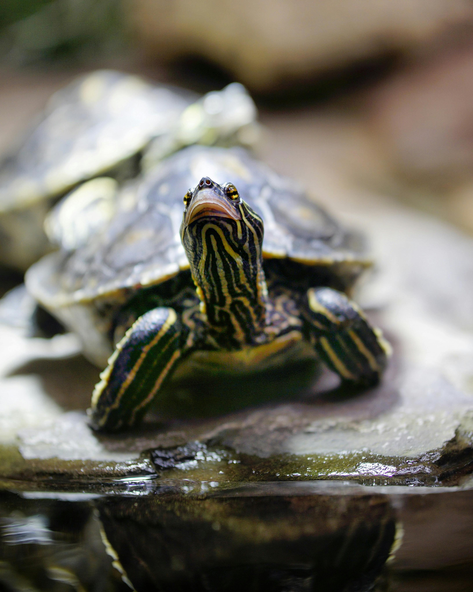
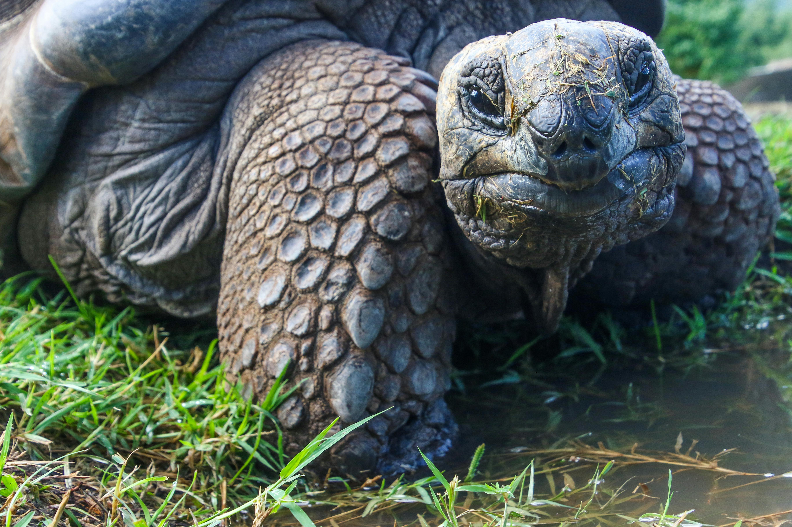

Sea turtles are one of the most fascinating creatures on the Earth. Let's appreciate them!
| Type | Lifespan | Habitat | Diet | Size |
|---|---|---|---|---|
| Turtles | 20-40 years | Freshwater and terrestrial | Omnivores (mostly plant material) | Varies widely |
| Tortoises | 80-150 years | Dry land | Herbivores (grasses, weeds) | Up to 4 feet |
| Sea Turtles | 30-50 years, up to 80 years in captivity | Oceanic | Omnivores (jellyfish, algae, crustaceans) | Up to 6 feet |